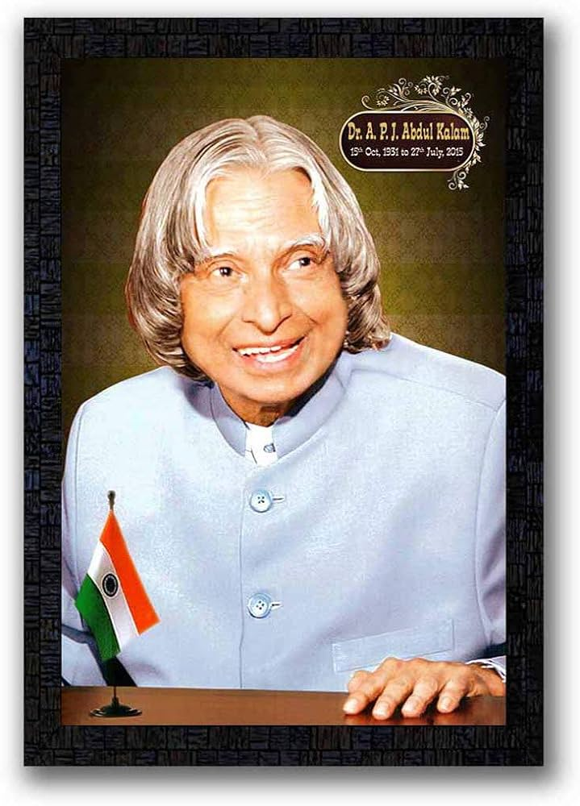

Biography
Dr. APJ Abdul Kalam was born on October 15, 1931, in Rameswaram, Tamil Nadu. He was an aerospace scientist and served as the 11th President of India from 2002 to 2007.
He played a key role in the development of India's missile and nuclear weapons programs and was known as the "Missile Man of India".
Achievements
- Recipient of Bharat Ratna, India's highest civilian award.
- Authored several books, including "Wings of Fire" and "Ignited Minds".
- Key role in India's Pokhran-II nuclear tests in 1998.
Legacy
Dr. Kalam passed away on July 27, 2015. His life and work continue to inspire millions of people around the world. He is remembered for his contributions to science, education, and his humble personality.